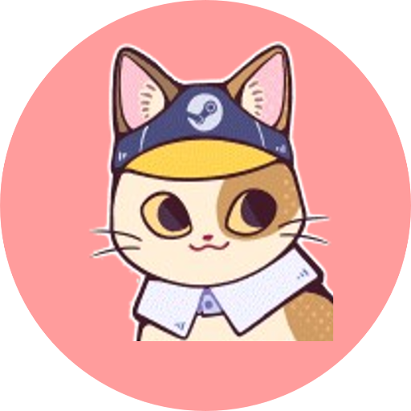

<div
  class="footer-container"
  scrollReached
  (scrollReached)="onFooterIntersection()"
>
  <div class="upper-content">
    <div class="footer-content">
      <div class="footer-header">Thanks for Viewing My Portfolio!</div>
      <div class="footer-socials">
        @for (social of socials; track social) {
          <a [href]="social.iconRedirect" target="_blank">
            <div class="footer-social-icon-container {{ social.iconClass }}">
              <fa-icon [icon]="['fab', social.iconName]"></fa-icon>
            </div>
          </a>
        }
        <a
          href="https://www.riotgames.com/?gamename=Daijin&tagline=%E5%A4%A7%E8%87%A3%E3%81%AE%E7%8C%AB"
          target="_blank"
        >
          <div class="footer-social-icon-container riot">
            <svg
              xmlns="http://www.w3.org/2000/svg"
              fill="currentColor"
              role="img"
              viewBox="0 0 24 24"
              class="svg-inline--fa fa-riot"
            >
              <path
                d="M13.458.86 0 7.093l3.353 12.761 2.552-.313-.701-8.024.838-.373 1.447 8.202 4.361-.535-.775-8.857.83-.37 1.591 9.025 4.412-.542-.849-9.708.84-.374 1.74 9.87L24 17.318V3.5Zm.316 19.356.222 1.256L24 23.14v-4.18l-10.22 1.256Z"
              />
            </svg>
          </div>
        </a>
      </div>
      <div class="footer-links">
        <span class="dot-divder invisible">•</span>
        @for (option of options; track option) {
          @if (option.name == "RESUME") {
            <a
              class="footer-link"
              href="../../../assets/RESUME.pdf"
              target="_blank"
            >
              {{ option.name }}
            </a>
            <span class="dot-divder">•</span>
          } @else {
            <span class="footer-link" (click)="scrollToSection(option.anchor)">
              {{ option.name }}
            </span>
            <span class="dot-divder">•</span>
          }
        }
      </div>
      <div class="footer-copyright">
        <a href="https://github.com/Sia-WRWD/my-portfolio-v2" target="_blank">
          Copyright © 2024 Sia Chee Zhen | All Rights Reserved.
        </a>
      </div>
    </div>
    <div class="footer-logo">
      
      
    </div>
  </div>
</div>
